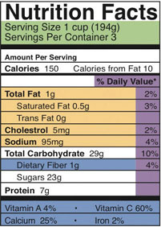

Eat your way to health.
“Let food be thy medicine and medicine be thy food.” These words, espoused by Greek physician Hippocrates over two thousand years ago, bear much relevance on our food choices and their connection to our health. Today, the scientific community echoes Hippocrates’ statement as it recognizes some foods as functional foods. The Academy of Nutrition and Dietetics defines functional foods as “whole foods and fortified, enriched, or enhanced foods that have a potentially beneficial effect on health when consumed as part of a varied diet on a regular basis, at effective levels.”
In the latter nineteenth century, a Russian doctor of immunology, Elie Metchnikoff, was intrigued by the healthy life spans of people who lived in the tribes of the northern Caucasus Mountains. What contributed to their long life span and their resistance to life-threatening diseases? A possible factor lay wrapped up in a leather satchel used to hold fermented milk. One legend recounts that Mohammed, the great prophet of Islam, revealed this recipe to members of the Orthodox faith on the condition that they would not tell anyone outside of the faith how to create such a good-feeling beverage. The tribes, under Mohammed’s direction, combined a tiny amount of small grains that resembled white broccoli with milk in a leather satchel. This bag was hung from a doorway in a house, so that all who passed would hit the bag, mixing up the contents. The result was a refreshing, slightly carbonated, creamy beverage with tangy overtones.
Observing the connection between the beverage and longevity, Dr. Elie Metchnikoff began his research on beneficial bacteria and the longevity of life that led to his book, The Prolongation of Life. He studied the biological effects and chemical properties of the kefir elixir whose name came from the Turkish word “kef” or “pleasure.” Intrigued, the Russian Society of Physicians went on a quest to locate the recipe in order to prescribe this drink to their patients. However, just as instructed, no one would share the recipe. As a result, the mission of obtaining this highly guarded recipe was placed on the Blandov brothers, who owned the Moscow Dairy and some holdings in the Caucasus Mountains.
The Blandov brothers had a beautiful employee, Irina Sakharova, whom they sent to the courts of the Caucasus tribe of Prince Bek-Mirza Barchorov in order to charm the recipe out of him. The prince immediately fell in love with Irina. As time went on, Irina asked the prince for some kefir grains. He refused, explaining that he was forbidden from sharing this secret and feared the consequences of violating religious law. Irina returned home when she realized that she would never pry the recipe from the prince. However, on orders from the heartbroken prince, Irina was kidnapped and brought back to marry him. She was taken aback and refused this proposal. Her refusal was rejected and the marriage was arranged. The Blandov brothers courageously stole into the tribe the night before the marriage and managed to free Irina. Insulted and still seeing a way to retrieve the kefir grains, Irina brought her case before the Russian Czar, charging the prince with kidnapping. Upon review of the evidence, it was ruled in her favor and Irina won her case. As part of her grievance repayment Irina requested some kefir grains. Bound by law, the prince had to comply. Irina gave the grains to the Blandov brothers who mass-produced kefir from these kernels. To this day, kefir is one of the most widely enjoyed beverages in Russia.
Kefir has since found its way into America, where it is marketed in several flavors and can be found at your local grocery store. It is one product of the billion-dollar functional food industry marketed with all sorts of health claims from improving digestion to preventing cancer. What is the scientific evidence that kefir is a functional food? Expert nutritionists agree that probiotics, such as kefir, reduce the symptoms of lactose intolerance and can ward off virally caused diarrhea. While some health claims remain unsubstantiated, scientific studies are ongoing to determine the validity of other health benefits of probiotics.
Will you eat your way to health with probiotic foods?
Knowing how to maintain the balance of friendly bacteria in your intestines through proper diet can promote overall health. Recent scientific studies have shown that probiotic supplements positively affect intestinal microbial flora, which in turn positively affect immune system function. As good nutrition is known to influence immunity, there is great interest in using probiotic foods and other immune-system-friendly foods as a way to prevent illness. In this chapter we will explore not only immune system function, but also all other organ systems in the human body. We will learn the process of nutrient digestion and absorption, which further reiterates the importance of developing a healthy diet to maintain a healthier you. The evidence abounds that food can indeed be “thy medicine.”
What distinguishes a living organism from an inanimate object? A living organism conducts self-sustaining biological processes. A cell is the smallest and most basic form of life. Robert Hooke, one of the first scientists to use a light microscope, discovered the cell in 1665. In all life forms, including bacteria, plants, animals, and humans, the cellBasic structural and functional unit of all life. was defined as the most basic structural and functional unit. Based on scientific observations over the next 150 years, scientists formulated the cell theoryCells are the most basic building units of life, all living things are composed of cells, and new cells are made from preexisting cells, which divide into two., which is used for all living organisms no matter how simple or complex. The cell theory incorporates three principles:
Who you are has been determined because of two cells that came together inside your mother’s womb. The two cells containing all of your genetic information (DNA) united to begin making new life. Cells divided and differentiated into other cells with specific roles that led to the formation of the body’s numerous body organs, systems, blood, blood vessels, bone, tissue, and skin. As an adult, you are comprised of trillions of cells. Each of your individual cells is a compact and efficient form of life—self-sufficient, yet interdependent upon the other cells within your body to supply its needs.
Independent single-celled organisms must conduct all the basic processes of life: it must take in nutrients (energy capture), excrete wastes, detect and respond to its environment, move, breathe, grow, and reproduce. Even a one-celled organism must be organized to perform these essential processes. All cells are organized from the atomic level to all its larger forms. Oxygen and hydrogen atoms combine to make the molecule water (H2O). Molecules bond together to make bigger macromolecules. The carbon atom is often referred to as the backbone of life because it can readily bond with four other elements to form long chains and more complex macromolecules. Four macromolecules—carbohydrates, lipids, proteins, and nucleic acids—make up all of the structural and functional units of cells.
Although we defined the cell as the “most basic” unit of life, it is structurally and functionally complex (see Figure 3.1). A cell can be thought of as a mini-organism consisting of tiny organs called organelles. The organellesA structural or functional unit in a cell that is constructed from several macromolecules bonded together. are structural and functional units constructed from several macromolecules bonded together. A typical animal cell contains the following organelles: the nucleus (which houses the genetic material DNA), mitochondria (which generate energy), ribosomes (which produce protein), the endoplasmic reticulum (which is a packaging and transport facility), and the golgi apparatus (which distributes macromolecules). In addition, animal cells contain little digestive pouches, called lysosomes and peroxisomes, which break down macromolecules and destroy foreign invaders. All of the organelles are anchored in the cell’s cytoplasm via a cytoskeleton. The cell’s organelles are isolated from the surrounding environment by a plasma membrane.
Figure 3.1

The cell is structurally and functionally complex.
Discovery Video: Cells
(click to see video)This video describes the importance of cells in the human body.
Unicellular (single-celled) organisms can function independently, but the cells of multicellular organisms are dependent upon each other and are organized into five different levels in order to coordinate their specific functions and carry out all of life’s biological processes.
Table 3.1 The Eleven Organ Systems in the Human Body and Their Major Functions
| Organ System | Organ Components | Major Function |
|---|---|---|
| Circulatory | heart, blood/lymph vessels, blood, lymph | Transport nutrients and waste products |
| Digestive | mouth, esophagus, stomach, intestines | Digestion and absorption |
| Endocrine | all glands (thyroid, ovaries, pancreas) | Produce and release hormones |
| Immune | white blood cells, lymphatic tissue, marrow | Defend against foreign invaders |
| Integumentary | skin, nails, hair, sweat glands | Protective, body temperature regulation |
| Muscular | skeletal, smooth, and cardiac muscle | Body movement |
| Nervous | brain, spinal cord, nerves | Interprets and responds to stimuli |
| Reproductive | gonads, genitals | Reproduction and sexual characteristics |
| Respiratory | lungs, nose, mouth, throat, trachea | Gas exchange |
| Skeletal | bones, tendons, ligaments, joints | Structure and support |
| Urinary | kidneys, bladder, ureters | Waste excretion, water balance |
Energy is required in order to build molecules into larger macromolecules, and to turn macromolecules into organelles and cells, and then turn those into tissues, organs, and organ systems, and finally into an organism. Proper nutrition provides the necessary nutrients to make the energy that supports life’s processes. Your body builds new macromolecules from the nutrients in food.
Energy is stored in a nutrient’s chemical bonds. Energy comes from sunlight, which plants then capture and, via photosynthesis, use it to transform carbon dioxide in the air into the molecule, glucose. When the glucose bonds are broken, energy is released. Bacteria, plants, and animals (including humans) harvest the energy in glucose via a biological process called cellular respirationThe process by which the stored chemical energy in nutrients is transformed into cellular energy.. In this process the chemical energy of glucose is transformed into cellular energy in the form of the molecule, adenosine triphosphate (ATP). Cellular respiration requires oxygen (aerobic) and it is provided as a waste product of photosynthesis. The waste products of cellular respiration are carbon dioxide (CO2) and water, which plants use to conduct photosynthesis again. Thus, energy is constantly cycling between plants and animals. As energy is consumed nutrients are recycled within it.

Plants harvest energy from the sun and capture it in the molecule, glucose. Humans harvest the energy in glucose and capture it into the molecule, ATP.
In this section, we have learned that all life is composed of cells capable of transforming small organic molecules into energy. How do complex organisms such as humans convert the large macromolecules in the foods that we eat into molecules that can be used by cells to make cellular energy? In the next section, we will discuss the physiological process of digestion to answer this question.
Digestion begins even before you put food into your mouth. When you feel hungry, your body sends a message to your brain that it is time to eat. Sights and smells influence your body’s preparedness for food. Smelling food sends a message to your brain. Your brain then tells the mouth to get ready, and you start to salivate in preparation for a delicious meal.
Figure 3.3 The Digestion Process

Digestion converts the food we eat into smaller particles, which will be processed into energy or used as building blocks.
Once you have eaten, your digestive systemThe body system responsible for breaking down complex food particles into smaller absorbable components. The entire system is composed of several hollow, tube-shaped organs including the mouth, pharynx, esophagus, stomach, small intestine, large intestine (or colon), rectum, and anus. (Figure 3.4 "The Human Digestive System") breaks down the food into smaller components. To do this, it functions on two levels, mechanical and chemical. Once the smaller particles have been broken down, they will be absorbed and processed by cells throughout the body for energy or used as building blocks for new cells. The digestive system is one of the eleven organ systems of the human body and it is composed of several hollow tube-shaped organs including the mouth, pharynx, esophagus, stomach, small intestine, large intestine (or colon), rectum, and anus. It is lined with mucosal tissue that secretes digestive juices (which aid in the breakdown of food) and mucus (which facilitates the propulsion of food through the tract). Smooth muscle tissue surrounds the digestive tract and its contraction produces waves, known as peristalsisWaves of smooth muscle contraction that propel food down the digestive tract., that propel food down the tract. Nutrients as well as some nonnutrients are absorbed. Substances such as fiber get left behind and are appropriately excreted.
There are four steps in the digestion process (Figure 3.4 "The Human Digestive System"). The first step is ingestionCollection of nutrients into the alimentary canal., which is the collection of food into the digestive tract. It may seem a simple process, but ingestion involves smelling food, thinking about food, and the involuntary release of saliva in the mouth to prepare for food entry. In the mouth, where the second step of digestion occurs, the mechanical and chemical breakdown of food begins. The chemical breakdownThe breaking apart of food macromolecules by enzymes secreted by the salivary glands, stomach, pancreas, and small intestine. Additionally, bile emulsifies fats. of food involves enzymes, which break apart the components in food. Theses enzymes are secreted by the salivary glands, stomach, pancreas, and small intestine. Mechanical breakdownIncludes mastication (chewing) and the muscular contractions of the stomach and small intestine that mash, mix, slosh, and propel food down the alimentary canal. starts with mastication (chewing) in the mouth. Teeth crush and grind large food particles, while saliva initiates the chemical breakdown of food and enables its movement downward. The slippery mass of partially broken-down food is called bolus, which moves down the digestive tract as you swallow. Swallowing may seem voluntary at first because it requires conscious effort to push the food with the tongue back toward the throat, but after this, swallowing proceeds involuntarily, meaning it cannot be stopped once it begins. As you swallow, the bolus is pushed from the mouth through the pharynx and into a muscular tube called the esophagus. As it travels through the pharynx, a small flap called the epiglottis closes, to prevent choking by keeping food from going into the trachea. Peristaltic contractions in the esophagus propel the food down to the stomach. At the junction between the esophagus and stomach there is a sphincter muscle that remains closed until the food bolus approaches. The pressure of the food bolus stimulates the lower esophageal sphincter to relax and open and food then moves from the esophagus into the stomach. The mechanical breakdown of food is accentuated by the muscular contractions of the stomach and small intestine that mash, mix, slosh, and propel food down the alimentary canal. Solid food takes between four and eight seconds to travel down the esophagus, and liquids take about one second.
When food enters the stomach, a highly muscular organ, powerful peristaltic contractions help mash, pulverize, and churn food into chyme. ChymeA semiliquid mass of partially digested food that also contains gastric juices. is a semiliquid mass of partially digested food that also contains gastric juices secreted by cells in the stomach. Cells in the stomach also secrete hydrochloric acid and the enzyme pepsin, that chemically breaks down food into smaller molecules. The stomach has three basic tasks:
The length of time food spends in the stomach varies by the macronutrient composition of the meal. A high-fat or high-protein meal takes longer to break down than one rich in carbohydrates. It usually takes a few hours after a meal to empty the stomach contents completely.
Digestion Video
(click to see video)This video shows the mechanical and chemical breakdown of food into chyme.
The small intestine is divided into three structural parts: the duodenum, the jejunum, and the ileum. Once the chyme enters the duodenum (the first segment of the small intestine), the pancreas and gallbladder are stimulated and release juices that aid in digestion. The pancreas secretes up to 1.5 liters of pancreatic juice through a duct into the duodenum per day. This fluid consists mostly of water, but it also contains bicarbonate ions that neutralize the acidity of the stomach-derived chyme and enzymes that further breakdown proteins, carbohydrates, and lipids. The gallbladder secretes a much smaller amount of bile to help digest fats, also through a duct that leads to the duodenum. Bile is made in the liver and stored in the gall bladder. Bile’s components act like detergents by surrounding fats similar to the way dish soap removes grease from a frying pan. This allows for the movement of fats in the watery environment of the small intestine. Two different types of muscular contractions, called peristalsis and segmentation, move and mix the food in various stages of digestion through the small intestine. Similar to what occurs in the esophagus and stomach, peristalsis is circular waves of smooth muscle contraction that propel food forward. Segmentation sloshes food back and forth in both directions promoting further mixing of the chyme. Almost all the components of food are completely broken down to their simplest unit within the first 25 centimeters of the small intestine. Instead of proteins, carbohydrates, and lipids, the chyme now consists of amino acids, monosaccharides, and emulsified fatty acids.
The next step of digestion (nutrient absorption) takes place in the remaining length of the small intestine, or ileum (> 5 meters).
The small intestine is perfectly structured for maximizing nutrient absorption. Its surface area is greater than 200 square meters, which is about the size of a tennis court. The surface area of the small intestine increases by multiple levels of folding. The internal tissue of the small intestine is covered in villi, which are tiny finger-like projections that are covered with even smaller projections, called microvilli (Figure 3.5). The digested nutrients pass through the absorptive cells of the intestine via diffusion or special transport proteins. Amino acids and monosaccharides (sugars) are transported from the intestinal cells into capillaries, but the much larger emulsified fatty acids, fat-soluble vitamins, and other lipids are transported first through lymphatic vessels, which soon meet up with blood vessels.
The process of digestion is fairly efficient. Any food that is still incompletely broken down (usually less than ten percent of food consumed) and the food’s indigestible fiber content moves from the small intestine to the large intestine (colon) through a connecting valve. The main task of the large intestine is to reabsorb water. Remember, water is present not only in solid foods, but also the stomach releases a few hundred millilters of gastric juice and the pancreas adds approximately another 500 milliliters during the digestion of the meal. For the body to conserve water, it is important that the water be reabsorbed. In the large intestine, no further chemical or mechanical breakdown of food takes place, unless it is accomplished by the bacteria that inhabit this portion of the digestive tract. The number of bacteria residing in the large intestine is estimated to be greater than 10(14), which is more than the total number of cells in the human body (10(13)). This may seem rather unpleasant, but the great majority of bacteria in the large intestine are harmless and some are even beneficial.
There has been significant talk about pre- and probiotic foods in the mainstream media. The World Health Organization defines probiotics as live bacteria that confer beneficial health effects on their host. They are sometimes called “friendly bacteria.” The most common bacteria labeled as probiotic is lactic acid bacteria (lactobacilli). They are added as live cultures to certain fermented foods such as yogurt. Prebiotics are indigestible foods, primarily soluble fibers, that stimulate the growth of certain strains of bacteria in the large intestine and provide health benefits to the host. A review article in the June 2008 issue of the Journal of Nutrition concludes that there is scientific consensus that probiotics ward off viral-induced diarrhea and reduce the symptoms of lactose intolerance.Farnworth, E. R. “The Evidence to Support Health Claims for Probiotics.” J Nutr 138, no. 6 (2008): 1250S–4S. http://jn.nutrition.org/content/138/6/1250S.long. Expert nutritionists agree that more health benefits of pre- and probiotics will likely reach scientific consensus. As the fields of pre- and probiotic manufacturing and their clinical study progress, more information on proper dosing and what exact strains of bacteria are potentially “friendly” will become available.
You may be interested in trying some of these foods in your diet. A simple food to try is kefir. Several websites provide good recipes, including http://www.kefir.net/recipes.htm.
After a few hours in the stomach, plus three to six hours in the small intestine, and about sixteen hours in the large intestine, the digestion process enters step four, which is the elimination of indigestible food as feces. Feces contain indigestible food and gut bacteria (almost 50 percent of content). It is stored in the rectum until it is expelled through the anus via defecation.
The Stages of Digestion
(click to see video)This video reviews the sequence of events during food digestion.
Decide whether you want to consume pre- and probiotic foods to benefit your health. Visit the websites below to help in your decision-making process. Defend your decision scientifically.
When the digestive system has broken down food to its nutrient components the body eagerly awaits delivery. The first stop of most absorbed nutrients is the liver. One of the liver’s primary functions is to regulate metabolic homeostasis. Metabolic homeostasisThe nutrients consumed and absorbed matches the energy required to carry out life’s biological processes. may be defined as when the nutrients consumed and absorbed matches the energy required to carry out life’s biological processes. Simply put, nutrient energy intake equals energy output. Through the body’s network of blood vessels and veins, glucose and amino acids are directly transported from the small intestine to the liver. Lipids are transported to the liver by a more circuitous route involving the lymphatic system, which contains vessels similar to the circulatory system that transport white blood cells called lymph.
Maintaining the body’s energy status quo is crucial because when metabolic homeostasis is disturbed by an eating disorder or disease, bodily function suffers. This will be discussed in more depth in the last section of this chapter. The liver is the only organ in the human body that is capable of exporting nutrients for energy production to other tissues. Therefore, when a person is in between meals (fasted state) the liver exports nutrients and when a person has just eaten (fed state) the liver stores nutrients within itself. Nutrient levels and the hormones that respond to their levels in the blood provide the input so that the liver can distinguish between the fasted and fed states and distribute nutrients appropriately.
All eleven organ systems in the human body require nutrient input to perform their specific biological functions. No energy in means no work output. Overall health and the ability to carry out all of life’s basic processes is fueled by nutrients. Without them organ systems would fail, humans would not reproduce, and the race would disappear. In this section, we will discuss some of the critical nutrients that support specific organ system functions.
Figure 3.6 The Circulatory System

The circulatory system transports nutrients to all cells and carries wastes out.
The circulatory systemComprised of the heart, blood, and blood vessels. Its main functions are to transport nutrients to all cells and transport wastes from all cells. is one of the eleven organ systems of the human body. Its main function is to transport nutrients to cells and wastes from cells (Figure 3.6 "The Circulatory System"). This system consists of the heart, blood, and blood vessels. The heart pumps the blood, and the blood is the transportation fluid. The transportation route to all tissues is a highly intricate blood-vessel network, comprised of arteries, veins, and capillaries. Nutrients absorbed in the small intestine travel mainly to the liver through the hepatic portal vein. From the liver, nutrients travel upward through the inferior vena cava blood vessel to the heart. The heart forcefully pumps the nutrient-rich blood first to the lungs to pick up some oxygen and then to all other cells in the body. Arteries become smaller and smaller on their way to cells, so that by the time blood reaches a cell, the artery’s diameter is extremely small and the vessel is now called a capillary. The reduced diameter of the blood vessel substantially slows the speed of blood flow. This dramatic reduction in blood flow gives cells time to harvest the nutrients in blood and exchange metabolic wastes.
The human brain (which weighs only about 3 pounds, or 1,300 kilograms) is estimated to contain over one hundred billion neurons. Neurons form the core of the central nervous systemNeurons form the core of the central nervous system, which consists of the brain, spinal cord, and other nerve bundles. The main function of the central nervous system is to sense changes in the external environment and create a reaction to them., which consists of the brain, spinal cord, and other nerve bundles in the body. The main function of the central nervous system is to sense changes in the external environment and create a reaction to them. For instance, if your finger comes into contact with a thorn on a rose bush, a sensory neuron transmits a signal from your finger up through the spinal cord and into the brain. Another neuron in the brain sends a signal that travels back to the muscles in your hand and stimulates muscles to contract and you jerk your finger away. All of this happens within a tenth of a second. All nerve impulses travel by the movement of charged sodium, potassium, calcium, and chloride atoms. These are some of the essential minerals in our diets—essential because they are absolutely required for central nervous system function. Nerves communicate with each other via chemicals built from amino acids called neurotransmitters. Eating adequate protein from a variety of sources will ensure the body gets all of the different amino acids that are so important for central nervous system function.
Every day the brain uses over 20 percent of the energy obtained from nutrients. Its main fuel is glucose and only in extreme starvation will it use anything else. For acute mental alertness and clear thinking, glucose must be systematically delivered to your brain. This does not mean that sucking down a can of sugary soda before your next exam is a good thing. Just as too much glucose is bad for other organs, such as the kidneys and pancreas, it also produces negative effects upon the brain. Excessive glucose levels in the blood can cause a loss of cognitive function and chronically high blood-glucose levels can damage brain cells. The brain’s cognitive functions include language processing, learning, perceiving, and thinking. Recent scientific studies demonstrate that having continuously high blood-glucose levels substantially elevates the risk for developing Alzheimer’s disease, which is the greatest cause of age-related cognitive decline.
The good news is that much research is directed toward determining the best diets and foods that slow cognitive decline and maximize brain health. A study in the June 2010 issue of the Archives of Neurology reports that people over age sixty-five who adhered to diets that consisted of higher intakes of nuts, fish, poultry, tomatoes, cruciferous vegetables, fruits, salad dressing, and dark green, and leafy vegetables, as well as a lower intake of high-fat dairy products, red meat, organ meat, and butter, had a much reduced risk for Alzheimer’s disease.Gu, Y., PhD et al. “Food Combination and Alzheimer Disease Risk: A Protective Diet.” Arch Neurol 67, no. 6 (2010): 699–706. doi: 10./1001/archneurol.2010.84. Other scientific studies provide supporting evidence that foods rich in omega-3 fatty acids and/or antioxidants provide the brain with protection against Alzheimer’s disease. One potential “brain food” is the blueberry. The protective effects of blueberries upon the brain are linked to their high content of anthocyanins, which are potent antioxidants and reduce inflammation. A small study published in the April 2010 issue of the Journal of Agricultural and Food Chemistry found that elderly people who consumed blueberry juice every day for twelve weeks had improved learning and memorization skills in comparison to other subjects given a placebo drink.Krikorian, R. et al. “Blueberry Supplementation Improves Memory in Older Adults.” J Agric Food Chem 58, no. 7 (2010): 3996–4000. doi: 10.1021/jf9029332. More clinical trials are evaluating the effects of blueberries and other foods that benefit the brain and preserve its function as we age.
The muscular systemThe muscular system allows voluntary movement as well as involuntary movements of other organ systems. It consists of skeletal muscle, the heart muscle, and smooth muscles. allows the body to move voluntarily, but it also controls involuntary movements of other organ systems such as heartbeat in the circulatory system and peristaltic waves in the digestive system. It consists of over six hundred skeletal muscles, as well as the heart muscle, the smooth muscles that surround your entire alimentary canal, and all your arterial blood vessels. Muscle contraction relies on energy delivery to the muscle. Each movement uses up cellular energy and without an adequate energy supply muscle function suffers. Muscle, like the liver, can store the energy from glucose in the large polymeric molecule glycogen. But unlike the liver, muscles use up all of their own stored energy and do not export it to other organs in the body. When muscle energy stores are diminished, muscle contraction weakens. However, muscle is not as susceptible to low levels of blood glucose as the brain because it will readily use alternate fuels, such as fatty acids and protein to produce cellular energy.
If you are familiar with endurance sports, you may have heard of “hitting the wall” or “bonking.” These colloquial terms refer to the extreme fatigue that sets in after about 120 minutes of performing an endurance sport, such as marathon running or long-distance cycling. The physiology underlying “hitting the wall” means that muscles have used up all their stored glycogen and are therefore dependent on other nutrients to support their energy needs. Fatty acids are transported from fat-storing cells to the muscle to rectify the nutrient deficit. However, fatty acids take more time to convert to energy than glucose, thus decreasing performance levels. To avoid “hitting the wall” or “bonking,” endurance athletes load up on carbohydrates a few days before the event. This will maximize an athlete’s amount of glycogen stored in their liver and muscle tissues. It is important not to assume that carbohydrate loading works for everyone. Without accompanied endurance training you will not increase the amount of stored glucose. If you plan on running a five-mile race for fun with your friend and decide to eat a large amount of carbohydrates in the form of a big spaghetti dinner the night before, the excess carbohydrates will be stored fat. Another way for athletes to avoid “hitting the wall” is to consume carbohydrate-containing drinks and foods during an endurance event. In fact, throughout the Tour de France—a twenty-two-day, twenty-four-hundred-mile race—the average cyclist consumes greater than 60 grams of carbohydrates per hour.
The functions of the endocrine systemOrgan system that is responsible for regulating nutrient intake, absorption, storage, and usage, in addition to many other things, most notably reproduction. The glands in the endocrine system are the pituitary, thyroid, parathyroid, adrenal, thymus, and pineal gland, as well as the pancreas, ovaries, and testes. are intricately connected to the body’s nutrition. This organ system is responsible for regulating appetite, nutrient absorption, nutrient storage, and nutrient usage, in addition to other functions, such as reproduction. The glands in the endocrine system are the pituitary, thyroid, parathyroid, adrenals, thymus, pineal, pancreas, ovaries, and testes. The glands secrete hormonesBiological molecules transported in the blood that regulate cellular processes in other target tissues., which are biological molecules that regulate cellular processes in other target tissues, so they require transportation by the circulatory system. Adequate nutrition is critical for the functioning of all the glands in the endocrine system. A protein deficiency impairs gonadal-hormone release, preventing reproduction. Athletic teenage girls with very little body fat often do not menstruate. Children who are malnourished usually do not produce enough growth hormone and fail to reach normal height for their age group. Probably the most popularized connection between nutrition and the functions of the endocrine system is that unhealthy dietary patterns are linked to obesity and the development of Type 2 diabetes. The Centers for Disease Control and Prevention (CDC) estimates that twenty-six million Americans have Type 2 diabetes as of 2011. This is 8.3 percent of the US population. The maps in Note 3.35 "Interactive 3.1" show the percentage of adults who are obese, and those with diagnosed Type 2 diabetes within all American counties. You can see that those counties with the highest incidence of obesity also have the highest incidence of Type 2 diabetes. To see how the rise in obesity in this country is paralleled by the rise in Type 2 diabetes, watch the PowerPoint presentation prepared by the CDC (Note 3.35 "Interactive 3.1").
Obesity and Type 2 Diabetes
(click to see video)Watch the National Health video to see the relationship between the rise in obesity and the rise in Type 2 diabetes.
Take a look at the PowerPoint presentation prepared by the CDC that captures the concurrent rises of obesity and Type 2 diabetes in this country. Click on “Maps of Trends in Diabetes and Obesity.”
What is the causal relationship between overnutrition and Type 2 diabetes? The prevailing theory is that the overconsumption of high-fat and high-sugar foods causes changes in muscle, fat, and liver cells that leads to a diminished response from the pancreatic hormone insulin. These cells are called “insulin-resistant.” Insulin is released after a meal and instructs the liver and other tissues to take up glucose and fatty acids that are circulating in the blood. When cells are resistant to insulin they do not take up enough glucose and fatty acids and so glucose and fatty acids remain at high concentrations in the blood. The continuously high amounts of glucose and fatty acids in the blood impair the release of insulin from the pancreas, further exacerbating the situation. The chronic elevation of glucose and fatty acids in the blood also causes damage to other tissues over time, so that people who have Type 2 diabetes are at increased risk for cardiovascular disease, kidney disease, nerve damage, and eye disease.
Do your part to slow the rising tide of obesity and Type 2 diabetes in this country. On the individual level, improve your own family’s diet; at the local community level, support the development of more nutritious school lunch programs; and at the national level, support your nation’s nutrition goals. Visit the CDC Diabetes Public Health Resource website at http://www.cdc.gov/diabetes/. It provides information on education resources, projects, and programs, and spotlights news on diabetes and obesity. The CDC also has a new workplace program called CDC’s LEAN Works! (LEAN: Leading Employees to Activity and Nutrition). The program provides free web-based resources with the mission of designing worksites that prevent obesity. See http://www.cdc.gov/leanworks/ for more details.
The immune systemThe immune system is made up of several different types of white blood cells and other components that act as barricades to foreign invaders. The functions of the immune system are to barricade, seek, recruit, attack, and destroy foreign invaders, such as bacteria and viruses. is comprised of several types of white blood cells that circulate in the blood and lymph. Their jobs are to seek, recruit, attack, and destroy foreign invaders, such as bacteria and viruses. Other less realized components of the immune system are the skin (which acts as a barricade), mucus (which traps and entangles microorganisms), and even the bacteria in the large intestine (which prevent the colonization of bad bacteria in the gut). Immune system functions are completely dependent on dietary nutrients. In fact, malnutrition is the leading cause of immune-system deficiency worldwide. When immune system functions are inadequate there is a marked increase in the chance of getting an infection. Children in many poor, developing countries have protein- and/or energy-deficient diets that are causative of two different syndromes, kwashiokors and marasmus. These children often die from infections that their bodies could normally have fought off, but because their protein and/or energy intake is so low, the immune system cannot perform its functions.
Other nutrients, such as zinc, selenium, copper, folate, and vitamins A, B6, C, D, and E, all provide benefits to immune system function. Deficiencies in these nutrients can cause an increased risk for infection and death. Zinc deficiency results in suppression of the immune system’s barrier functions by damaging skin cells; it is also associated with a decrease in the number of circulating white blood cells. A review of several studies in the journal Pediatrics concluded that zinc supplements administered to children under age five for longer than three months significantly reduces the incidence and severity of diarrhea and respiratory illnesses.Aggarwal R., MD, DM, J. Sentz, MPH and M. A. Miller, MD. “Role of Zinc Administration in Prevention of Childhood Diarrhea and Respiratory Illnesses: A Meta-Analysis.” Pediatrics 119, no. 6 (2007): 1120–30. doi: 10.1542/peds.2006–3481. Zinc supplementation has also been found to be therapeutically beneficial for the treatment of leprosy, tuberculosis, pneumonia, and the common cold. Equally important to remember is that multiple studies show that it is best to obtain your minerals and vitamins from eating a variety of healthy foods.
To ensure that your diet includes zinc-friendly foods, try these foods high in zinc and other immune-system friendly nutrients: oysters, poultry, baked beans, chick peas, cashews, sesame seeds, peanuts, whole grains, and zinc-fortified cereals.

These are just some of the foods that are high in zinc.
Just as undernutrition compromises immune system health, so does overnutrition. People who are obese are at increased risk for developing immune system disorders such as asthma, rheumatoid arthritis, and some cancers. Both the quality and quantity of fat affect immune system function. High intakes of saturated and trans fats negatively affect the immune system, whereas increasing your intake of omega-3 fatty acids, found in salmon and other oily fish, decreases inflammatory responses. High intakes of omega-3 fatty acids are linked to a reduction in the risk of developing certain autoimmune disorders, such as rheumatoid arthritis, and are used as part of a comprehensive treatment for rheumatoid arthritis.
Find out how fat supports brain function and protects nerves by visiting the Franklin Institute Resources for Science Learning website.
http://www.fi.edu/learn/brain/fats.html
Now look at the websites below to see how too much of the wrong kind of fats may be bad for the brain, while other types of fat are good for the brain.
http://archneur.ama-assn.org/cgi/content/full/60/2/194
http://www.sciencedaily.com/releases/2007/12/071210163251.htm
http://www.webmd.com/alzheimers/news/20070418/omeg-3-fatty-acid-slows-alzheimers
After viewing all of the videos, discuss the importance of “good fats” in the diet for optimizing brain function and preventing diseases such as Alzheimer’s.
EnergyThe quantity of work a particular system can perform. is essential to life. You must eat to have energy. You must go to bed at a decent time, so that when you wake up in the morning, you will not be too tired and you will have sufficient energy for the next day’s activities. Energy is also everywhere in our environment: sunlight, wind, water, plants, and animals. All living things use energy every day. Energy can be defined as the quantity of work a particular system can perform, whether it be a growing child’s body or a train transporting passengers from one place to another. Energy also helps us perform daily functions and tasks such as breathing, walking up a flight of steps, and studying for a test.
Energy is classified as either potential or kinetic. Potential energyStored energy. is stored energy, or energy waiting to happen. Kinetic energyMoving energy. is energy in motion. To illustrate this, think of an Olympic swimmer standing at the pool’s edge awaiting the sound of the whistle to begin the race. While he waits for the signal, he has potential energy. When the whistle sounds and he dives into the pool and begins to swim, his energy is kinetic (in motion).
Some basic forms of energy are:
The amount of energy in nutrients can be quantified into specific units that can be measured. The unit of measurement that defines the energy contained in a energy-yielding nutrient is called a calorie. A calorieA unit of energy; equivalent to the amount of energy required to heat 1 gram of water 1 degree Celsius. is the amount of energy in the form of heat that is required to heat one gram of water one degree Celsius. To measure the number of calories in a particular food substance, a certain amount of food is burned in a device called a calorimeter. As the food burns, heat is created. The heat dissipates to the surrounding water while a thermometer detects the change in temperature of the water. You can even perform calorimetry at home with a more basic device. However, it is not likely that you will use this device to measure calorie content in the foods that you eat since mathematical formulas have been developed to estimate caloric content.
The energy contained in energy-yielding nutrients differs because the energy-yielding nutrients are composed of different types of chemical bonds. A carbohydrate or a protein yields 4 kilocalories per gram, whereas a lipid yields 9 kilocalories per gram. A kilocalorie (Calorie)A kilocalorie is the amount of heat generated by a particular macronutrient that raises the temperature of 1 kilogram of water 1 degree Celsius (this is what is denoted on the Nutrition Facts panel). is the amount of heat generated by a particular macronutrient that raises the temperature of 1 kilogram of water 1 degree Celsius. A kilocalorie of energy performs one thousand times more work than a calorie. On the Nutrition Facts panel, the calories within a particular food are expressed as kilocalories, which is commonly denoted as “Calories” with a capital “C” (1 kcal = 1 Calorie = 1,000 calories).
Calculating the number of Calories in commercially prepared food is made fairly easy since the total number of Calories in a serving of a particular food is listed on the Nutrition Facts panel. If you wanted to know the number of Calories in the breakfast you consumed this morning just add up the number of Calories in each food. For example, if you ate one serving of yogurt that contained 150 Calories, on which you sprinkled one half of a cup of low-fat granola cereal that contained 209 Calories, and drank a glass of orange juice that contained 100 Calories, the total number of Calories you consumed at breakfast is 150 + 209 + 100 = 459 Calories. If you do not have a Nutrition Facts panel for a certain food, such as a half cup of blueberries, and want to find out the amount of Calories it contains, go to MyFood-a-pedia, a website maintained by the USDA (see Note 3.48 "Interactive 3.2").
My Food-a-pedia is a tool that calculates the Calories in foods. It also compares the caloric content between foods.
Also listed on the Nutrition Facts panel are the amounts of total fat, total carbohydrate, and protein in grams. To calculate the contribution of each macronutrient to the total kilocalories in a serving, multiply the number of grams by the number of kilocalories yielded per gram of nutrient. For instance, from the Nutrition Facts panel for yogurt given in Figure 3.7 "A Nutrition Facts Panel for Yogurt", the protein content in one serving is 7 grams. Protein yields 4 kilocalories per gram. The number of kilocalories from protein is calculated by using the following equation:
# of grams of protein × 4 kilocalories/gram of protein 7 grams × 4 kilocalories/gram = 28 kilocaloriesFigure 3.7 A Nutrition Facts Panel for Yogurt
Because the total number of kilocalories in each serving of yogurt is 150, the percent of energy obtained from protein is calculated by using the following equation:
(# kilocalories from protein ÷ total kilocalories per serving) × 100 (28 ÷ 150) × 100 = 18.7 percentWhen nutrients and energy are in short supply, cells, tissues, organs, and organ systems do not function properly. Unbalanced diets can cause diseases and, conversely, certain illnesses and diseases can cause an inadequate intake and absorption of nutrients, simulating the health consequences of an unbalanced diet. Overeating high-fat foods and nutrient-poor foods can lead to obesity and exacerbate the symptoms of gastroesophageal reflux disease (GERD) and irritable bowel syndrome (IBS). Many diseases and illnesses, such as celiac disease, interfere with the body getting its nutritional requirements. A host of other conditions and illnesses, such as food allergies, cancer, stomach ulcers, Crohn’s disease, and kidney and liver disease, also can impair the process of digestion and/or negatively affect nutrient balance and decrease overall health.
Gastroesophageal reflux disease (GERD)A persistant form of acid reflux, in which acidic contents of the stomach leak backward into the esophagus and cause irritation. is a persistent form of acid reflux that occurs more than two times per week. Acid reflux occurs when the acidic contents of the stomach leak backward into the esophagus and cause irritation. It is estimated that GERD affects 25 to 35 percent of the US population. An analysis of several studies published in the August 2005 issue of Annals of Internal Medicine concludes that GERD is much more prevalent in people who are obese.Hampel, H. MD, PhD, N. S. Abraham, MD, MSc(Epi) and H. B. El-Serag, MD, MPH. “Meta-Analysis: Obesity and the Risk for Gastroesophageal Reflux Disease and Its Complications.” Ann Intern Med 143, no. 3 (2005): 199–211. http://www.ncbi.nlm.nih.gov/pubmed/16061918 While the links between obesity and GERD are not completely known, they likely include that excess body fat puts pressure on the stomach, overeating increases pressure in the stomach, and fatty foods are triggers for GERD symptoms. The most common GERD symptom is heartburn, but people with GERD may also experience regurgitation (flow of the stomach’s acidic contents into the mouth), frequent coughing, and trouble swallowing. Approximately 35 percent of children born in the United States have GERD. In babies the symptoms are more difficult to distinguish from what babies do normally. The symptoms are spitting up more than normal, incessant crying, refusal to eat, burping, and coughing. Most babies outgrow GERD before their first birthday but a small percentage do not.
There are other causative factors of GERD that may be separate from or intertwined with obesity. The sphincter that separates the stomach’s internal contents from the esophagus often does not function properly and acidic gastric contents seep upward. Sometimes the peristaltic contractions of the esophagus are also sluggish and compromise the clearance of acidic contents. In addition to having an unbalanced, high-fat diet, some people with GERD are sensitive to particular foods—chocolate, garlic, spicy foods, fried foods, and tomato-based foods—which worsen symptoms. Drinks containing alcohol or caffeine may also worsen GERD symptoms. GERD is diagnosed most often by a history of the frequency of recurring symptoms. A more proper diagnosis can be made when a doctor inserts a small device into the lower esophagus that measures the acidity of the contents during one’s daily activities. Sometimes a doctor may use an endoscope, which is a long tube with a camera at the end, to view the tissue in the esophagus. About 50 percent of people with GERD have inflamed tissues in the esophagus. A condition known as Barrett’s esophagus may develop over time in some people who have GERD. Barrett’s esophagus refers to a structural difference in the tissue of the esophagus, which is caused by recurrent tissue damage. It occurs in 5 to 15 percent of patients diagnosed with GERD and less than 1 percent of these patients may develop cancer of the esophagus, a highly lethal cancer.
The first approach to GERD treatment is dietary and lifestyle modifications. Suggestions are to reduce weight if you are overweight or obese, avoid foods that worsen GERD symptoms, eat smaller meals, stop smoking, and remain upright for at least three hours after a meal. There is some evidence that sleeping on a bed with the head raised at least six inches helps lessen the symptoms of GERD. People with GERD may not take in the nutrients they need because of the pain and discomfort associated with eating. As a result, GERD can be caused by an unbalanced diet and its symptoms can lead to a worsening of nutrient inadequacy, a viscious cycle that further compromises health. Many medications are available to treat GERD, including antacids, histamine2 (H2) blockers, and proton-pump inhibitors. Some evidence from scientific studies indicates that medications used to treat GERD may accentuate certain nutrient deficiencies, namely zinc and magnesium. When these treatment approaches do not work surgery is an option. The most common surgery involves reinforcing the sphincter that serves as a barrier between the stomach and esophagus.
Irritable bowel syndrome (IBS)A disorder characterized by muscle spasms in the colon that result in abdominal pain, bloating, constipation, and/or diarrhea. There is no permanent structural damage to the large intestine. is characterized by muscle spasms in the colon that result in abdominal pain, bloating, constipation, and/or diarrhea. Interestingly, IBS produces no permanent structural damage to the large intestine as often happens to patients who have Crohn’s disease or inflammatory bowel disease. It is estimated that one in five Americans displays symptoms of IBS. The disorder is more prevalent in women than men. Two primary factors that contribute to IBS are an unbalanced diet and stress. There is no specific test to diagnose IBS, but other conditions that have similar symptoms (such as celiac disease) must be ruled out. This involves stool tests, blood tests, and having a colonoscopy (which involves the insertion of a flexible tube with a tiny camera on the end through the anus so the doctor can see the colon tissues).
Symptoms of IBS significantly decrease a person’s quality of life as they are present for at least twelve consecutive or nonconsecutive weeks in a year. Large meals and foods high in fat and added sugars, or those that contain wheat, rye, barley, peppermint, and chocolate intensify or bring about symptoms of IBS. Additionally, beverages containing caffeine or alcohol may worsen IBS. Stress and depression compound the severity and frequency of IBS symptoms. As with GERD, the first treatment approaches for IBS are diet and lifestyle modifications. People with IBS are often told to keep a daily food journal to help identify and eliminate foods that cause the most problems. Other recommendations are to eat slower, add more fiber to the diet, drink more water, and to exercise. There are some medications (many of which can be purchased over-the-counter) to treat IBS and the resulting diarrhea or constipation. Sometimes antidepressants and drugs to relax the colon are prescribed.
Celiac diseaseAn autoimmune disorder caused by an abnormal reaction of cells in the small intestine to a type of protein, called gluten. is an autoimmune disorder affecting between 0.5 and 1.0 percent of Americans—that is, one in every one- to two-hundred people. It is caused by an abnormal immune reaction of small intestine cells to a type of protein, called gluten. Gluten forms in the presence of water and is composed of two protein parts, glutenin and gliadin. Glutenin and gliadin are found in grains that are commonly used to make bread, such as wheat, rye, and barley. When bread is made, yeast eats the flour and makes a waste product, carbon dioxide, which forms bubbles in the dough. As the dough is kneaded, gluten forms and stretches. The carbon dioxide gas bubbles infiltrate the stretchy gluten, giving bread its porosity and tenderness. For those who are sensitive to gluten, it is good to know that corn, millet, buckwheat, and oats do not contain the proteins that make gluten. However, some people who have celiac disease also may have a response to products containing oats. This is most likely the result of cross-contamination of grains during harvest, storage, packaging, and processing.
Celiac disease is most common in people of European descent and is rare in people of African American, Japanese, and Chinese descent. It is much more prevalent in women and in people with Type 1 diabetes, autoimmune thyroid disease, and Down and Turner syndromes. Symptoms can range from mild to severe and can include pale, fatty, loose stools, gastrointestinal upset, abdominal pain, weight loss and, in children, a failure to grow and thrive. The symptoms can appear in infancy or much later in life, even by age seventy. Celiac disease is not always diagnosed because the symptoms may be mild. A large number of people have what is referred to as “silent” or “latent” celiac disease (Figure 3.8 "Celiac").
Celiac disease diagnosis requires a blood test and a biopsy of the small intestine. Because celiac disease is an autoimmune disease, antibodies produced by white blood cells circulate in the body and can be detected in the blood. When gluten-containing foods are consumed the antibodies attack cells lining the small intestine leading to a destruction of the small villi projections. This tissue damage can be detected with a biopsy, a procedure that removes a portion of tissue from the damaged organ. Villi destruction is what causes many of the symptoms of celiac disease. The destruction of the absorptive surface of the small intestine also results in the malabsorption of nutrients, so that while people with this disease may eat enough, nutrients do not make it to the bloodstream because absorption is reduced. The effects of nutrient malabsorption are most apparent in children and the elderly as they are especially susceptible to nutrient deficiencies. Over time these nutrient deficiencies can cause health problems. Poor absorption of iron and folic acid can cause anemia, which is a decrease in red blood cells. Anemia impairs oxygen transport to all cells in the body. Calcium and vitamin D deficiences can lead to osteoporosis, a disease in which bones become brittle (we will explore this in detail in Chapter 9 "Nutrients Important for Bone Health").
If you think you or someone close to you may have celiac disease, do not despair; it is a very treatable disease. Once diagnosed, a person follows a gluten-free diet for life. This requires dedication and careful detective work to seek out foods with hidden gluten, but some stores carry gluten-free foods. After eliminating gluten from the diet, the tissues of the small intestine rapidly repair themselves and heal in less than six months.
Paying attention to the way individuals react to various foods is essential in determining what foods may specifically affect a person adversely. Food allergies are one of the many ways in which different body make-ups affect nutritional concerns. Although an estimated twelve million Americans have food allergies, there are likely many more people who say they have food allergies than actually do. This is because food sensitization is different from a medically-determined food allergy. When someone has a food allergyAfter eating certain kinds of food, the immune system reacts shortly thereafter producing symptoms such as digestive troubles, swollen airways, hives, or possible death., the immune system mistakenly attacks a certain kind of food (usually the protein component of a food), such as peanuts, as if it were a threat and IgE antibodies are produced. Doctors sometimes test for food allergies by using skin-prick tests or blood tests to look for the presence of IgE antibodies. However, these types of tests are not always reliable as they can sometimes yield a false positive result. By far, the most valuable tests for determining a food allergy is the Double Blind Placebo Controlled Food Challenge (DBPCFC), which involves administering the food orally and then denoting the signs and symptoms of the allergic response.
Food allergy symptoms usually develop within a few minutes to two hours after a person has eaten a food to which they are allergic. These symptoms can range from the annoying to the potentially fatal, and include:
There are no clear treatments for food allergies. Epinephrine is sometimes used to control severe reactions, and individuals with known and dangerous allergies may get prescriptions for self-injectable devices. The only certain way to avoid allergic reactions to food is to avoid the foods that cause them. Beyond avoidance, this can mean reading food labels carefully, or even calling manufacturers for product information.
Ninety percent of food allergies are caused by these eight foods:
The prevalence of food allergies is a complex and growing problem. In response to this situation, the National Institute of Allergy and Infectious Diseases (NIAID) collaborated with thirty-four professional organizations, federal agencies, and patient-advocacy groups to develop a comprehensive guide to diagnosing and managing food allergies and treating acute food allergy reactions. The guide defines various food allergies, allergens, and reactions, provides comprehensive information on the prevalence of different food allergies, tracks the history of food allergies, and reviews medical management techniques for people with food allergies.
After watching the video on GERD, list the potential consequences of GERD.
Understanding GERD (GERD #1)
Find out how fat supports brain function and protects nerves by visiting the following website: http://www.fi.edu/learn/brain/fats.html. Now look at these other websites to see how too much of the wrong kind of fats may be bad for the brain, while other types of fat are good for the brain.
http://archneur.ama-assn.org/cgi/content/full/60/2/194
http://www.sciencedaily.com/releases/2007/12/071210163251.htm
http://www.webmd.com/alzheimers/news/20070418/omeg-3-fatty-acid-slows-alzheimers.
Discuss how a balanced fat intake that contains “good fats” helps optimize brain function and prevent diseases such as Alzheimer’s.